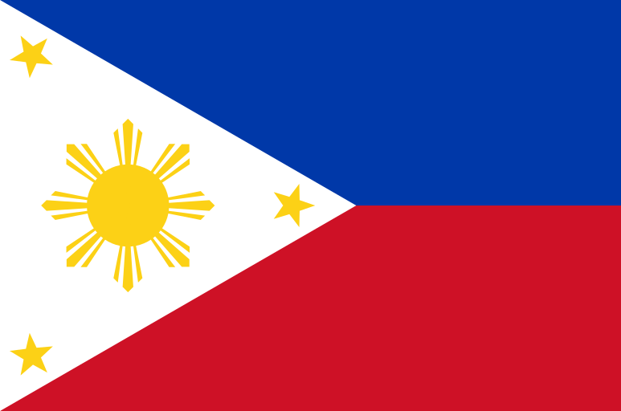

About Me
I'm Eunice Ann. I'm currenlty a full-time working employee and a BYU Pathway Student. I love playing video games on weekends with my family. I play the piano at church every Sunday. I like riding airplanes and seeing clouds up in the air.
Capiz, Philippines

Capiz is a province in the Western Visayas region that is home to Roxas City, also known as the Seafood Capital of the Philippines. Aside from the mouthwatering seafood dishes, Capiz also boasts of enchanting caves, historical landmarks, and beaches that will fulfill your wanderlust.